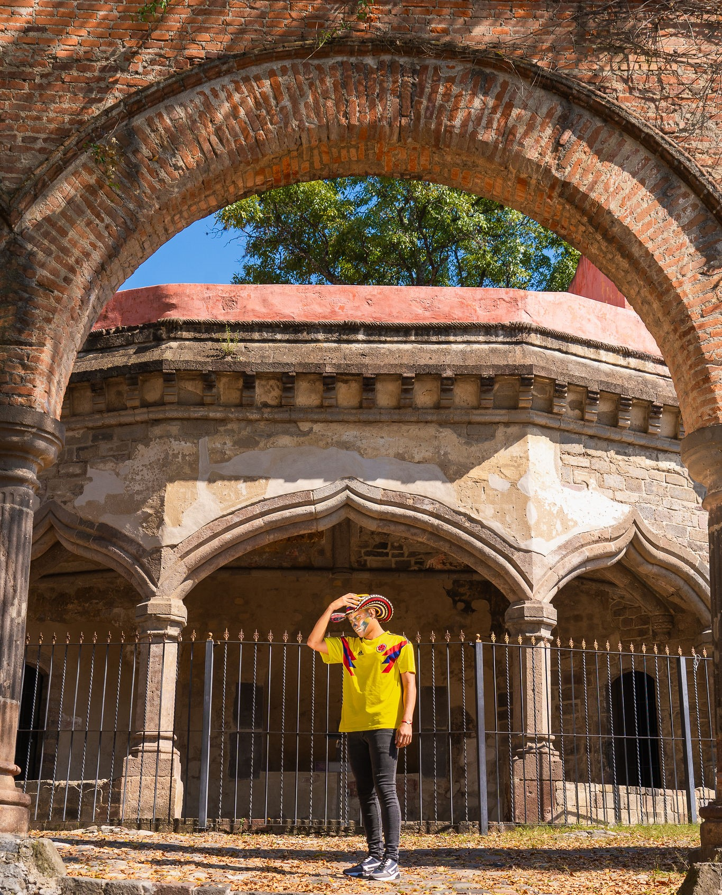

Acerca de mi
¡Bienvenido a mi página! Aquí, aprenderás más sobre mí.
Me llamo Agner de Jesús, nací en Colombia y actualmente vivo en Mompox. Soy ingeniero DevOps apasionado por la tecnología y la innovación. Me encanta aprender cosas nuevas y encontrar soluciones creativas a los problemas técnicos. Disfruto desarrollando proyectos que mejoren la eficiencia y faciliten la vida de las personas, y siempre estoy buscando maneras de optimizar y automatizar procesos. Mi objetivo es seguir creciendo profesionalmente para convertirme en un especialista en SRE y contribuir a la evolución tecnológica.
